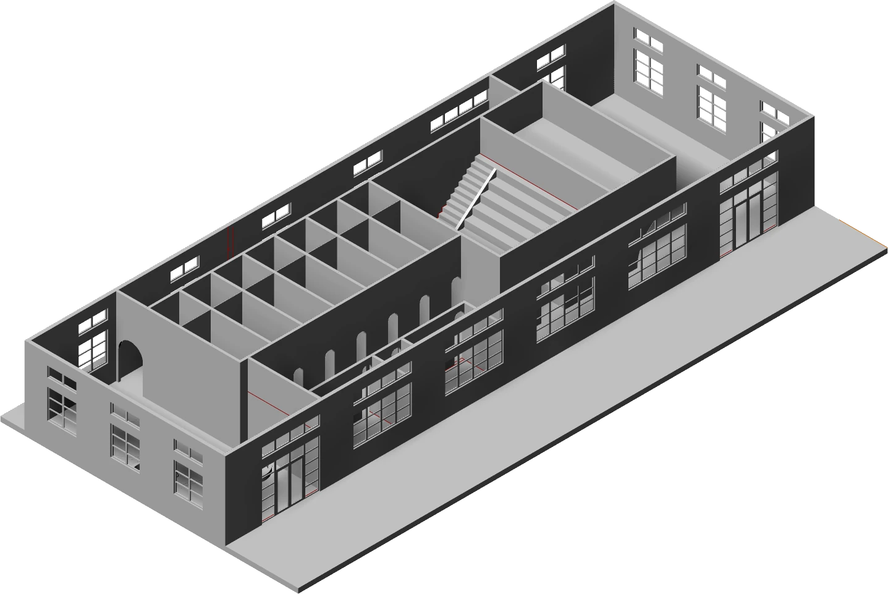

Balance
An interior organized around the movement between shared and private space.
- Year
- 2026
- Context
- Studio II · Interior design
- Status
- In progress
- Tools
- Rhino 3D · Adobe Suite

A shared setting.
Room for retreat.
Balance explores a therapy-centered environment for a cause-driven brand headquarters. Its central question is spatial: how can one interior support both shared activity and private reflection?
A tea bar, smaller reflection rooms, and an open meditation and yoga space create different levels of privacy. Circulation links them into a sequence of gathering, withdrawal, and return.
Open, enclosed,
and open again.
The collaged sections explore that sequence one space at a time. Changes in ceiling height, enclosure, material, and color give each part of the interior a different atmosphere.


Light at
the threshold.
A corridor study examines how warm light and repeated openings can connect distinct spaces. The model and collages develop the layout together with these more intimate views.

A direction
still developing.
Balance remains in progress. The current work establishes the sequence of communal and private spaces; further refinement will develop the layout and the atmosphere within each part of the interior.